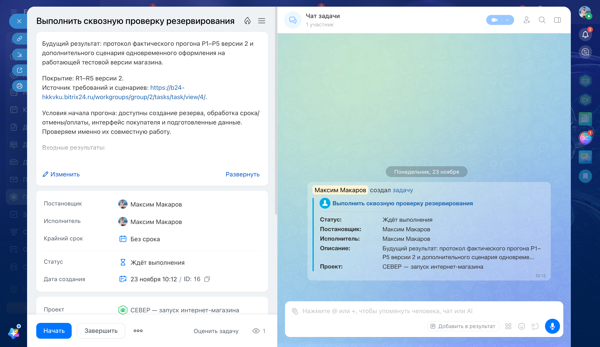
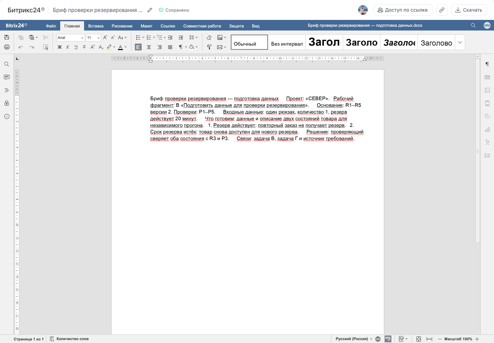
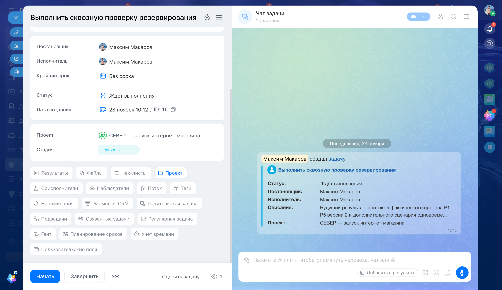
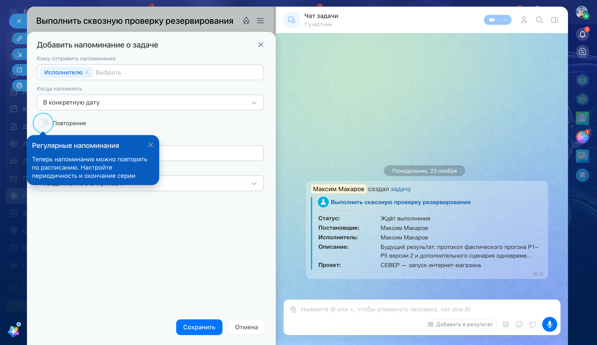
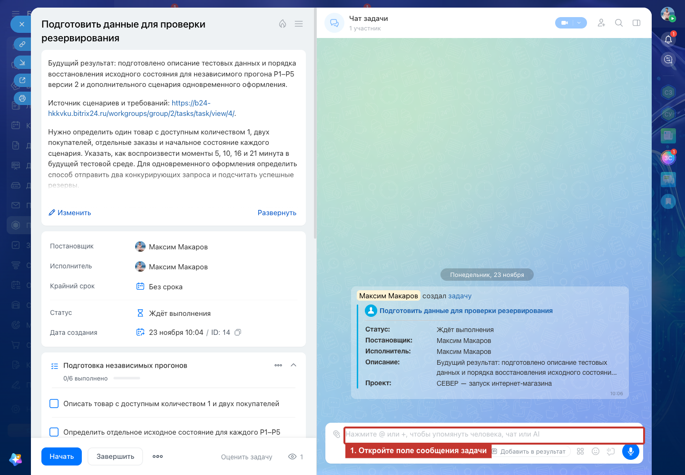
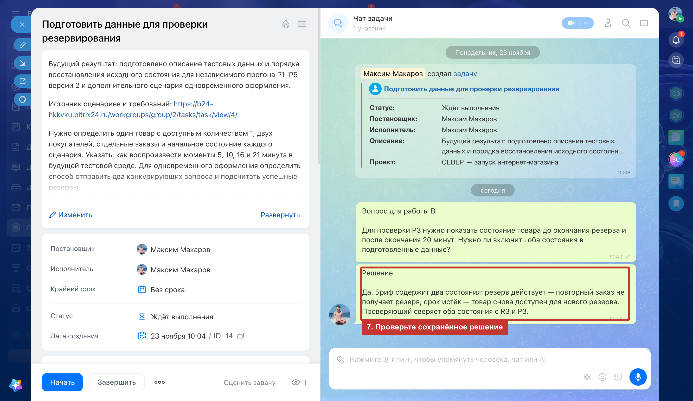
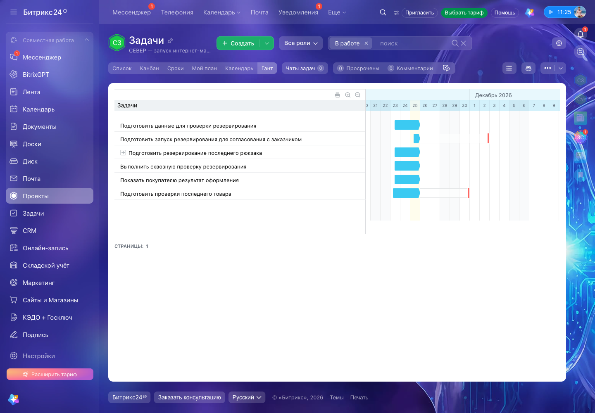

Автоматизация,
контроль и маршрут
согласования
Настраиваем передачу результата между исполнителем, проверяющим и руководителем так, чтобы замечание, доработка и задержка не потерялись в переписке.
- Где работаем
- Существующий проект «СЕВЕР»
- Основание
- R3, P3, задача В, бриф и задача Г
- Результат
- Проверяемый маршрут контроля задачи Г
Роли, состояния и доказательства переходов.
Уведомление, возврат на доработку и контрольная точка.
Замечание, ручной заменитель и доказательства.
01Продолжаем цепочку проверки
В лабораторной 6 команда подготовила данные в задаче В, сохранила бриф и связала их с будущим сквозным прогоном Г. Теперь задача Г должна пройти путь от подготовки результата до проверки и согласования.
Что передаётся между участниками
R3 и P3
Резерв действует 20 минут. Проверка сравнивает состояние товара до и после этого срока.
В и бриф
Подготовлены два состояния товара, роли и связи с задачей Г.
Задача Г
Исполнитель передаёт результат, проверяющий оставляет решение или замечание.
Стрелка показывает передачу материалов и ответственности. Она не создаёт автоматическую зависимость между карточками.
Исходные записи
- Откройте задачу Г.
В списке проекта найдите существующую задачу «Выполнить сквозную проверку резервирования». Проверьте название, проект «СЕВЕР», исполнителя, текущий этап и ссылку на источник требований. Эта карточка остаётся основой маршрута.

Шаг 1. Карточка Г открыта: видны описание проверки, исполнитель, проект и обсуждение задачи. - Откройте бриф из лабораторной 6.
В брифе должны быть R1–R5, P1–P5, роли, два состояния резервирования и ссылки на В и Г. Он остаётся источником подготовленных материалов.

Что на кадре: рабочий бриф сохранён в документах.
02Строим маршрут задачи Г
Состояние карточки отвечает только на вопрос, где находится работа. Условие перехода объясняет, почему она может двигаться дальше. Доказательство позволяет проверить это решение позже.
Возврат на доработку возможен только после сохранённого замечания. Устная просьба или сообщение без связи с P3 не позволяет восстановить причину возврата.
| Переход | Кто подтверждает | Условие | Доказательство |
|---|---|---|---|
| Готово к работе → В работе | Исполнитель | Открываются бриф, задача В и P3. | Ссылки в карточке Г или в документе. |
| В работе → На проверке | Исполнитель | Результат и способ проверки переданы. | Комментарий, ссылка на материал, история или уведомление. |
| На проверке → Доработка | Проверяющий | Есть расхождение с P3. | Замечание с наблюдаемым и ожидаемым результатом. |
| Доработка → К согласованию | Исполнитель и проверяющий | Ответ на замечание зафиксирован. | Повторная запись проверки. |
| К согласованию → Принято | Руководитель или заказчик | Результат и границы понятны. | Отдельное решение о приёмке. |
Делаем
- Зафиксируйте роли.
Укажите в карточке Г или в отдельном документе: исполнитель готовит результат, проверяющий сопоставляет его с P1–P5, координатор следит за передачей, руководитель или заказчик принимает результат. Один человек может выполнять несколько ролей, но решения записываются от имени роли.
- Выберите фактический этап задачи.
Откройте «Канбан» внутри задач проекта. Запишите текущий этап карточки Г. Не перетаскивайте её между этапами ради демонстрации.

Что на кадре: канбан показывает фактические этапы существующих задач. - Сохраните таблицу маршрута.
Перенесите пять строк таблицы выше в бриф либо документ «Маршрут проверки резервирования». Рядом с каждым переходом укажите реальное место его доказательства.
03Описываем полезные правила
Робот не нужен для каждого действия. Он оправдан, когда правило повторяется, имеет понятное событие и не требует содержательного решения. Ниже приведены три правила для одной задачи Г.
| Событие | Действие системы | Получатель | Что решает человек |
|---|---|---|---|
| Исполнитель передал работу на внутреннюю проверку. | Уведомить проверяющего, добавить его наблюдателем или назначить роль проверки. | Проверяющий. | Можно ли проверять результат и соответствует ли он P3. |
| Проверяющий сохранил замечание. | Уведомить исполнителя и вернуть работу на доработку либо создать связанную задачу замечания. | Исполнитель и координатор. | Содержание замечания, критичность и способ исправления. |
| Наступила контрольная точка срока или задача просрочена. | Напомнить ответственному и координатору. | Исполнитель и координатор. | Менять ли срок, приоритет, состав работы или подключать заказчика. |
Карточки правил
Передача на проверку
Событие: задача передана проверяющему.
Действие: система сообщает проверяющему о новой работе.
Артефакт: запись в истории, уведомление или роль наблюдателя.
Возврат с замечанием
Событие: проверяющий сохранил замечание.
Действие: система сообщает исполнителю о доработке.
Артефакт: замечание, этап доработки или связанная карточка.
Контроль задержки
Событие: контрольная точка срока наступила.
Действие: система напоминает координатору.
Артефакт: уведомление, история или экран ограничения.
Приёмка
Робот может передать карточку и напомнить участникам. Он не должен автоматически принимать работу или менять требование R3.
04Настраиваем напоминание в задаче
У задачи Г доступен отдельный механизм напоминаний. Он отправляет напоминание выбранному участнику в заданный момент. Это подтверждённая настройка задачи, поэтому начинаем лабораторную с неё. Роботы CRM и бизнес-процессы не заменяют напоминание задачи: они относятся к другим сущностям и требуют отдельной проверки.
- Найдите блок «Напоминания» в карточке Г.
В открытой задаче прокрутите набор свойств до пункта «Напоминания» и щёлкните его. Карточка не меняет этап и исполнителя: открывается отдельная форма настройки.

Шаг 2. В карточке Г доступен пункт «Напоминания». - Проверьте адресата.
Форма «Добавить напоминание о задаче» по умолчанию предлагает исполнителя. Оставьте исполнителя для личного контрольного напоминания либо выберите роль, которая должна увидеть задержку. Не добавляйте посторонних участников и не отправляйте внешнее сообщение.
- Задайте момент и способ напоминания.
В поле «Когда напомнить» выберите подходящее условие. Затем заполните «Дата и время» и «Тип напоминания». Для повторяющегося контроля включите «Повторение» только если команда согласовала периодичность и окончание серии.

Шаг 3. В форме видны адресат, условие «В конкретную дату», переключатель повторения, дата, время и тип напоминания. - Сохраните одно безопасное напоминание.
Перед кнопкой «Сохранить» ещё раз проверьте получателя и момент отправки. Сделайте снимок заполненной формы и сохранённого результата. Если вы не можете подтвердить отправку без лишнего уведомления, не сохраняйте форму: приложите экран доступной настройки и запишите ручной маршрут контрольной точки.
- Зафиксируйте границу функции.
Напоминание сообщает о моменте контроля. Оно не возвращает задачу на доработку, не меняет срок, не оценивает P3 и не принимает результат. Эти действия остаются в маршруте ролей из раздела 2.
05Сохраняем замечание и возврат
Замечание — это не оценка «плохо». Оно описывает расхождение между ожидаемым результатом P3 и наблюдаемым состоянием. Такая запись позволяет исполнителю повторить проверку и объяснить, что было исправлено.
- Откройте обсуждение задачи Г.
Для фактического замечания используйте поле комментария задачи. Если проверка не выполнялась, сохраните шаблон в документе как план проверочного сценария. Рядом укажите, что фактический дефект не зафиксирован.

Что на кадре: поле комментария задачи используется для сохранённой рабочей записи. - Сохраните замечание после реальной проверки.
Замените квадратные скобки фактами своей проверки. Перед отправкой проверьте связь с P3 и следующее действие. Не публикуйте личную переписку, телефоны, почту, пароли и коды доступа.
- Зафиксируйте передачу на доработку.
Если доступное правило уведомило исполнителя, сохраните его результат. При отсутствии правила добавьте упоминание исполнителя в комментарии и укажите в документе, что это ручной маршрут.

Что на кадре: после обновления рабочая запись остаётся в истории задачи. - Запишите ответ на замечание.
Исполнитель сохраняет, что было проверено или доработано. Проверяющий затем выполняет повторную проверку. Статус «готово» не заменяет этот ответ.
06Добавляем контрольную точку
Контрольная точка не требует календарной даты в задании. Она описывает событие, после которого координатор должен увидеть задержку: задача не передана на проверку, замечание не получило ответа или срок, заданный командой, приближается.
| Сигнал | Кого информировать | Что проверить | Следующее решение |
|---|---|---|---|
| Задача Г остаётся в работе без материала проверки. | Исполнитель и координатор. | Есть ли ссылка на результат и P3. | Уточнить блокер или изменить план. |
| Есть замечание без ответа исполнителя. | Исполнитель и проверяющий. | Понятно ли следующее действие. | Вернуть на доработку либо уточнить замечание. |
| Срок задачи приближается или прошёл. | Координатор и руководитель. | Причину задержки и влияние на Г. | Изменить срок, приоритет или границы только решением человека. |
Если портал показывает Гант или календарь, они помогают увидеть срок. Они не доказывают, что напоминание включено. Для автоматического напоминания нужен отдельный подтверждённый результат настройки.

07Собираем доказательства маршрута
Проверяющий должен суметь открыть записи в обратном порядке: решение о приёмке или замечание, задача Г, бриф, P3 и R3. Если нативные связи недоступны, используйте названия сущностей и ручные ссылки.
Трассировка контроля
R3 → P3
Как должен вести себя резерв и что наблюдает проверка.
В → бриф → Г
От подготовленных данных до сквозной проверки.
Замечание → решение
Почему задача возвращается или передаётся на согласование.
Ссылки фиксируют контекст решения. Они не превращают комментарий в автоматизированное согласование.
- Проверьте источник требования.
Откройте запись с R3 и P3. Убедитесь, что используется версия с резервом 20 минут.

Что на кадре: источник требований и проверок проекта. - Проверьте путь до задачи Г.
Из брифа должны открываться задача В, задача Г и источник требований. В маршруте лабораторной 7 добавьте ссылку на запись замечания или решения о приёмке.
- Опишите проверочный сценарий.
Запишите один сценарий в форме «событие → действие системы или ручной шаг → действие человека → сохранённый артефакт». Если автоматизация недоступна, это не ошибка: укажите реальный экран ограничения и ручную передачу.
08Что предъявить
Сдача показывает управляемую передачу работы. Наличие робота без события, получателя и результата не принимается.
- Ссылка на существующий проект «СЕВЕР».
- Ссылка на задачу Г и на бриф из лабораторной 6.
- Ссылка на источник R3 и P3.
- Таблица маршрута с ролями, условиями и доказательствами переходов.
- Три карточки правил: передача на проверку, возврат с замечанием, контрольная точка.
- Кадр формы напоминания: адресат, условие, момент и тип отправки; после безопасного сохранения — также кадр результата.
- Кадр задачи или документа, где видно проверяющего и следующий шаг.
- Сохранённое замечание по P3 после реальной проверки либо честно отмеченный шаблон проверочного сценария.
- Запись о передаче исполнителю на доработку: автоматическая или ручная.
- Один сценарий «событие → действие → артефакт → решение человека».
- Описание ручного маршрута для каждой недоступной функции.
- Краткий вывод: какое решение робот не должен принимать сам.
Проверяющий открывает задачу Г, затем бриф, P3 и запись замечания либо решения. Из этих материалов должно быть понятно, почему работа передана дальше, кому и что требуется сделать.
Контрольные вопросы
- Какое событие запускает правило передачи на проверку?
- Почему замечание должно ссылаться на P3?
- Кому нужно отправить напоминание о задержке и почему?
- Чем автоматическое уведомление отличается от решения о приёмке?
- Какой ручной маршрут используют, если правило недоступно?
Частые ошибки
| Ошибка | Почему маршрут не работает | Как исправить |
|---|---|---|
| Робот автоматически принимает задачу. | Соответствие R3 и P3 требует решения проверяющего. | Оставить роботу передачу и уведомление, а приёмку — человеку. |
| Замечание осталось в личном чате. | Команда не видит причину доработки. | Сохранить его в задаче, документе или связанной карточке. |
| Уведомление отправлено заказчику. | Внутренняя доработка не требует внешней коммуникации. | Адресовать правило исполнителю, проверяющему или координатору. |
| Задача закрыта после смены статуса. | Статус не доказывает проверенный результат. | Добавить материал проверки и решение принимающей роли. |
| Недоступная функция заменена макетом. | Нельзя проверить реальное ограничение. | Сохранить экран ограничения и описать ручной маршрут. |
09Короткий словарь
- Автоматизация
- Правило, которое выполняет повторяемое действие после заданного события.Событие → действие → получатель
- Триггер
- Событие, после которого запускается правило.Передача на проверку → уведомление
- Контрольная точка
- Момент, в котором команда проверяет задержку, блокер или отсутствие результата.Срок → напоминание → решение
- Замечание
- Сохранённое описание расхождения между проверкой и ожидаемым результатом.P3 → наблюдение → доработка
- Ручной маршрут
- Порядок действий команды, который используют, когда правило недоступно.Комментарий → упоминание → запись решения
Ограничения интерфейса
- Роботы CRM, автоматизация задач и бизнес-процессы могут относиться к разным сущностям и иметь разные ограничения тарифа.
- Открытый раздел не подтверждает доступность, сохранение или срабатывание правила.
- Не запускайте внешние сообщения, массовое создание задач и изменение чужих ролей без согласования.
- Не используйте личные телефоны, email, пароли, токены и личную переписку.
- Календарные даты на экране показывают состояние интерфейса.